Independent Study, Monsoon 2026
| Team | Sankalp Chaturvedi (2025201083) |
| KSPSVLN Siddardha Kumar Kavuri (2025201061) | |
| Rinkesh Verma (2025201070) | |
| Mentor | Rama Chandra Prasad |
This report collects the evidence behind the observations in the Main Report. Each section names the observation it supports (Obs. 1–15).
predictions_phase7* contain Phase 6 model outputs. They are labelled "Phase 6 run" here.
| Model | Loss | BLEU-1 | BLEU-2 | BLEU-3 | BLEU-4 | METEOR | ROUGE-L | Cosine |
|---|---|---|---|---|---|---|---|---|
| Phase 1 baseline | 0.9690 | 0.4720 | 0.3855 | 0.3393 | 0.3027 | 0.5966 | 0.6214 | 0.6477 |
| Phase 2 RemoteCLIP difference | 0.9345 | 0.5168 | 0.4237 | 0.3712 | 0.3284 | 0.6304 | 0.6545 | 0.7061 |
| Final cross-attention | 0.8982 | 0.5311 | 0.4355 | 0.3810 | 0.3365 | 0.6392 | 0.6604 | 0.7123 |
| Phase 6 tiles | 0.9225 | 0.5214 | 0.4297 | 0.3777 | 0.3358 | 0.6357 | 0.6624 | 0.7149 |
| Phase 8 stage 1a (epoch 7) | — | 0.5092 | 0.4167 | 0.3658 | 0.3250 | 0.6155 | 0.6482 | 0.7007 |
| Phase 8 stage 1b (Qwen bridge) | — | 0 | 0 | 0 | 0 | 0 | 0 | 0.0104 |
Phase 1 to Phase 2 (encoder only changed, 3.41 M vs 3.43 M trainable parameters):
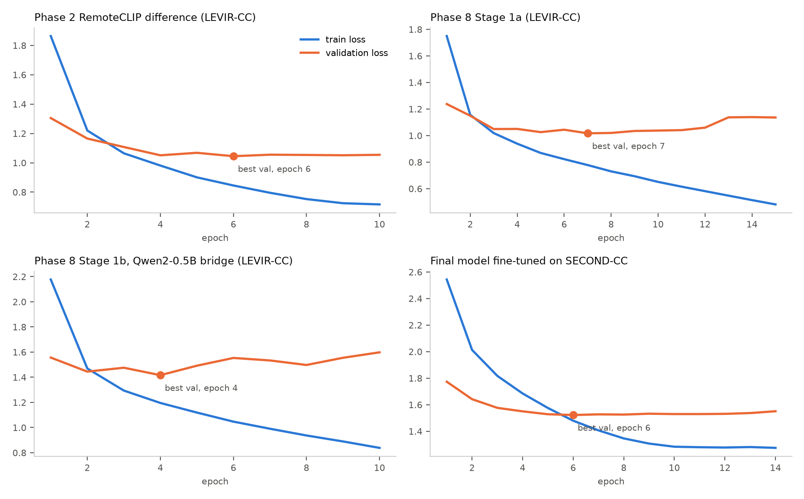
In every run, validation loss reaches its minimum early while training loss keeps falling:
| Run | Best validation loss | Final validation loss | Final training loss |
|---|---|---|---|
| Phase 2 | 1.045 (epoch 6) | 1.054 (epoch 10) | 0.716 |
| Phase 8, stage 1a | 1.017 (epoch 7) | 1.136 (epoch 15) | 0.482 (training accuracy 84.9%) |
| Phase 8, stage 1b | 1.417 (epoch 4) | 1.598 (epoch 10) | — |
| SECOND-CC fine-tuning | 1.522 (epoch 6) | 1.551 (epoch 14) | — |

| Model | LEVIR-CC loss | BLEU-4 | METEOR | ROUGE-L | Cosine |
|---|---|---|---|---|---|
| Final, before fine-tuning | 0.898 | 0.337 | 0.639 | 0.660 | 0.712 |
| Final, after fine-tuning | 4.080 | 0.149 | 0.394 | 0.437 | 0.458 |
| Phase 6, before fine-tuning | 0.923 | 0.336 | 0.636 | 0.662 | 0.715 |
| Phase 6, after fine-tuning | 3.520 | 0.121 | 0.318 | 0.374 | 0.438 |
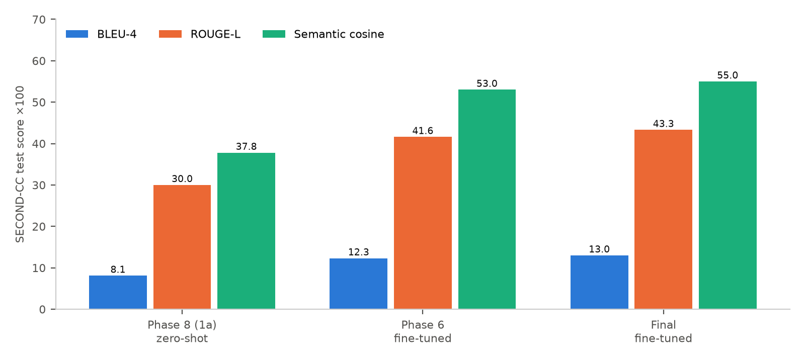
| Model / condition | BLEU-1 | BLEU-4 | METEOR | ROUGE-L | Cosine |
|---|---|---|---|---|---|
| Phase 8 stage 1a, zero-shot | 0.179 | 0.081 | 0.298 | 0.300 | 0.378 |
| Phase 6, fine-tuned | 0.354 | 0.123 | 0.392 | 0.416 | 0.530 |
| Final, fine-tuned | 0.363 | 0.130 | 0.413 | 0.433 | 0.550 |
The zero-shot and fine-tuned rows come from different models, so this comparison is indicative.
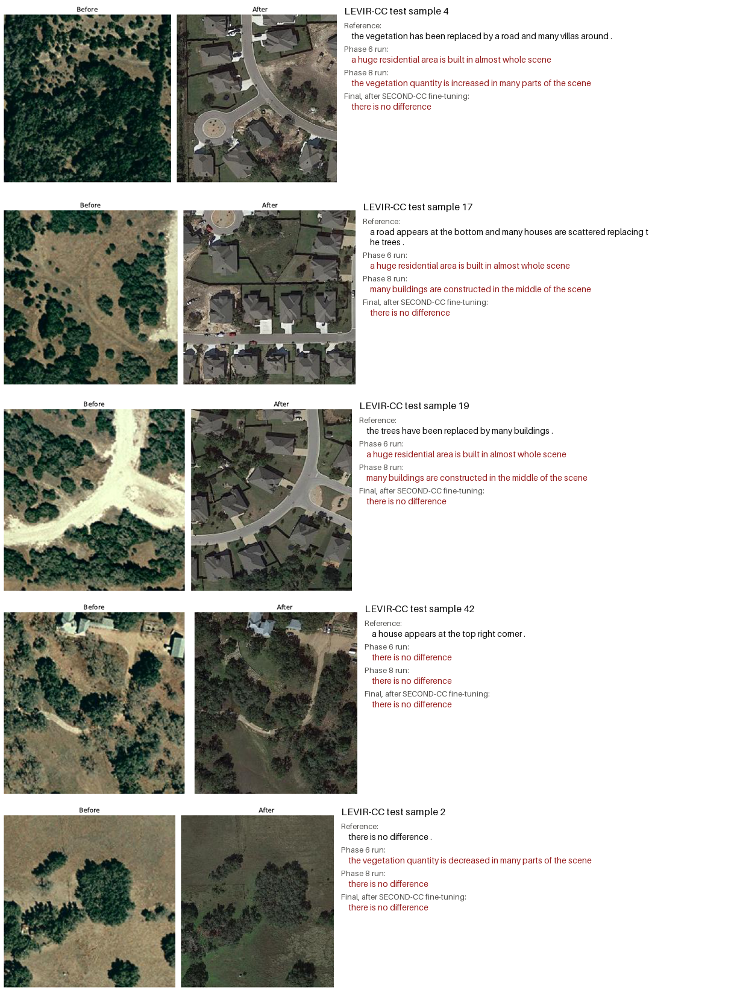
Sample 4, 17 and 19 (forest or scrub replaced by a housing estate):
Sample 42 (one house added at the top right): all three runs miss it.
Sample 2 (no change): the Phase 6 run reports vegetation loss.

| Prediction sheet | Changed pairs called "no difference" | Unchanged pairs correct | Distinct captions |
|---|---|---|---|
| Phase 6 run | 43 / 164 | 98 / 136 | 21 |
| Phase 8 run | 31 / 164 | 96 / 136 | 32 |
| Final after SECOND-CC fine-tuning | 164 / 164 | 136 / 136 | 1 |
| References | — | — | 163 |
On the SECOND-CC prediction sheets (300 samples, 255 changed), the Phase 6 and Phase 8 runs produced 97 and 82 distinct captions. They missed 16 and 19 changed pairs, and called 12 and 15 of 45 unchanged pairs changed.
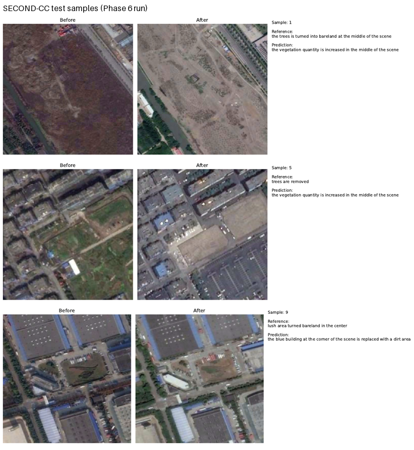
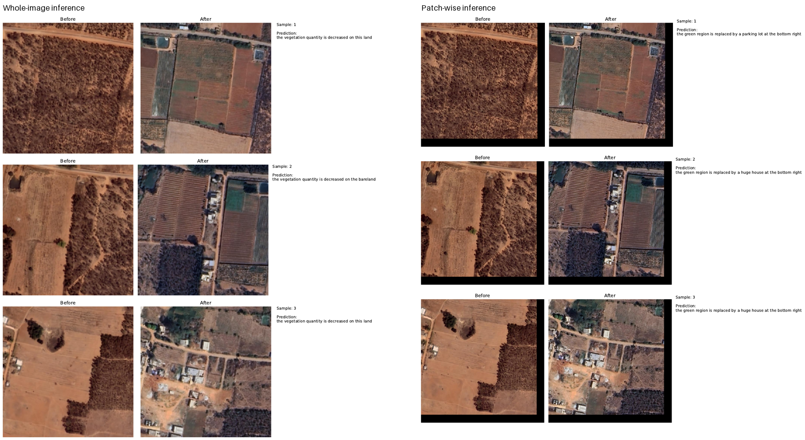
These 43 pairs have no reference captions. In the samples shown, the after images contain new farm structures and buildings.
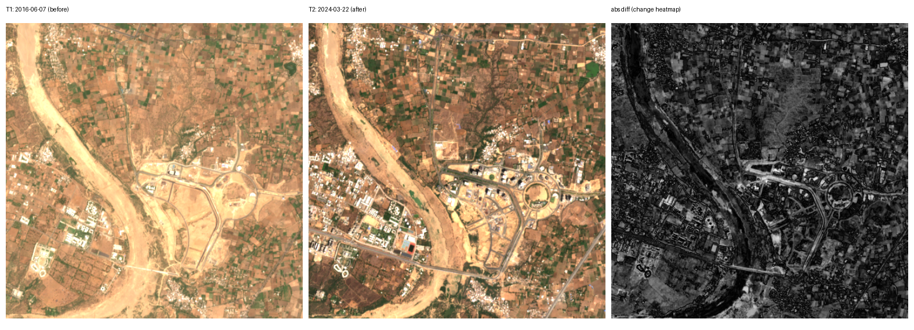
60 areas of interest in 5 categories, tiled into 512×512 patches and filtered by change magnitude. Of 2,126 tiles checked, 1,072 pairs were kept, in 1 h 53 min with 12 workers.
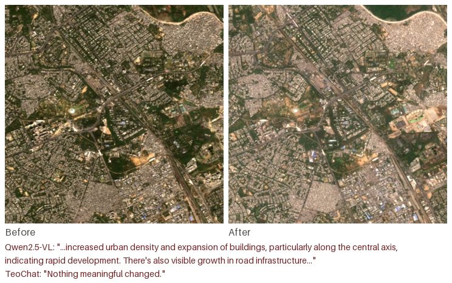
| Captioner (30 pairs) | Outcome |
|---|---|
| TeoChat | "Nothing meaningful changed" on 27/30; one invented hurricane-damage description |
| TeoChat, 4-bit | "Nothing meaningful changed" on 23/30 |
| Qwen2.5-VL, first run | 11 empty and 12 garbled answers (non-English text, repeated tokens) |
| Qwen2.5-VL, retries / 8-bit | Failures reduced but not removed; answers describe generic urban development |
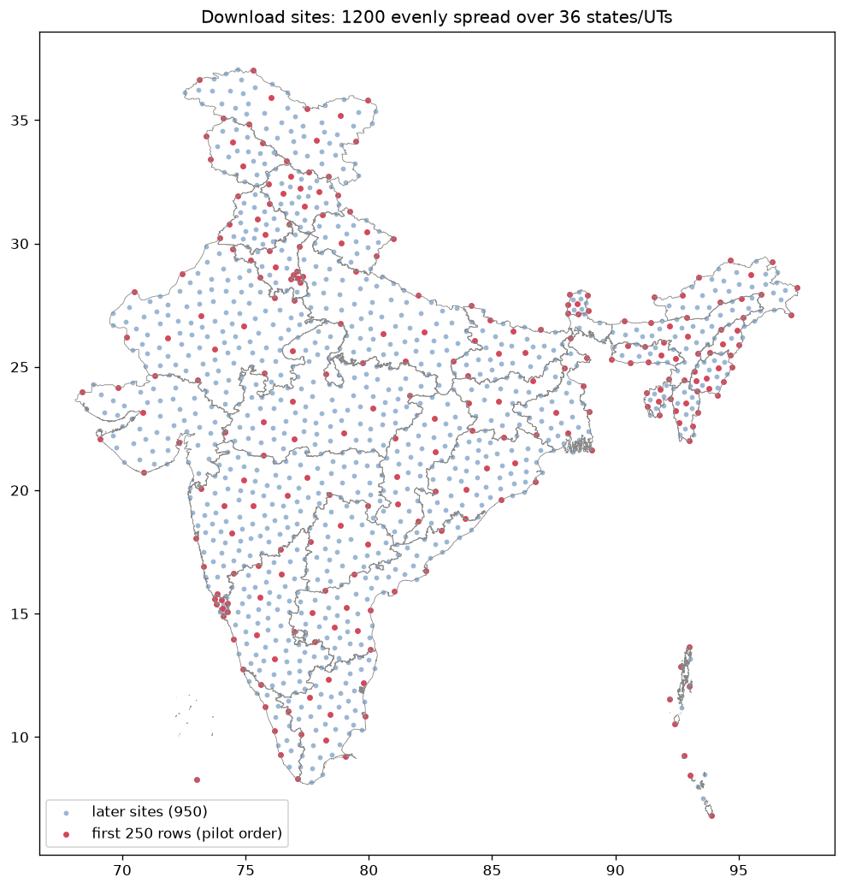
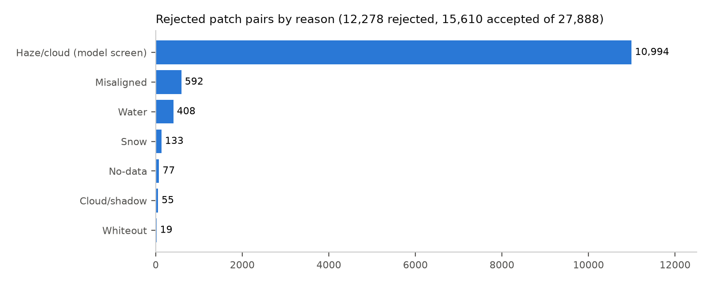
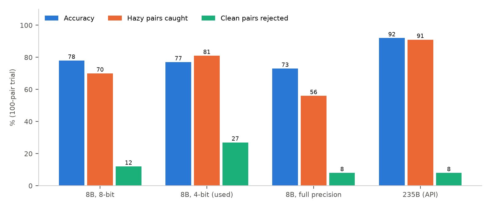
The 4-bit model was used for the full run because it was 8× faster on the cluster GPU (1.4 s per pair). The cost was a 27% wrong-reject rate on clean pairs. The reference labels for this trial were re-checked at large size using the 235B model as a second opinion, which favours the 235B row; its accuracy should be read as an upper bound.
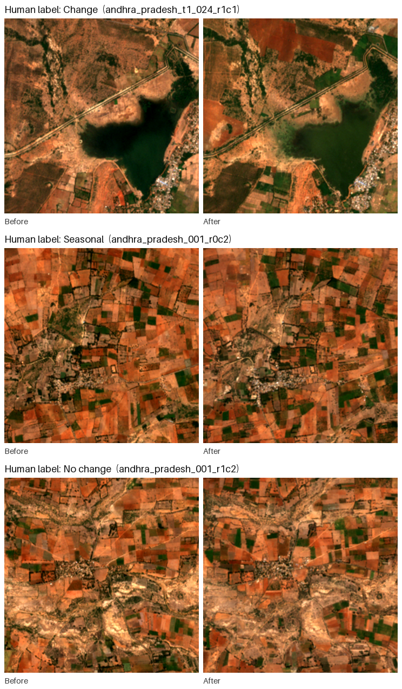
| Change | Seasonal | No change | Can't tell | Total | |
|---|---|---|---|---|---|
| Human-labelled (blind) | 55 | 214 | 226 | 40 | 535 |
| All labelled pairs | 143 | 400 | 383 | 76 | 1,002 |
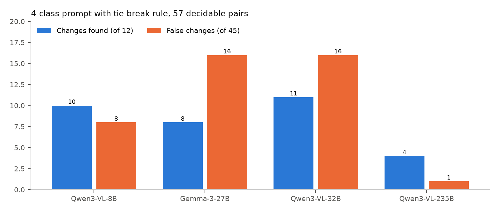
Asked plainly, the 235B dismissed real construction as "seasonal or agricultural variation" in most missed cases. The 32B over-called change.

The no-hint baseline used the 4-class prompt, while the boxed variants used a per-box prompt; the box variants are directly comparable with each other. With region boxes, the model's overall answer matched its answer for the boxes. It never reported a change outside the boxes, even when asked to.
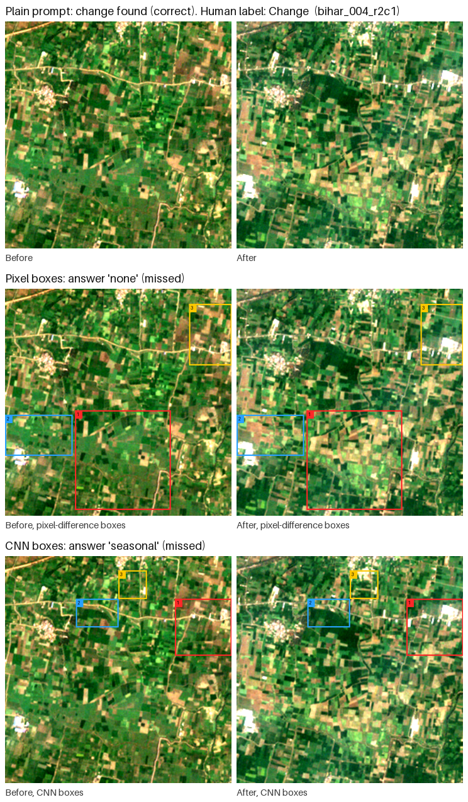

On 50 pairs, the map marked a median 82% of each image as changed (maximum 98%). With the map treated as fact, the model reported change on 19/19 real-change pairs and on 27/27 no-change pairs.
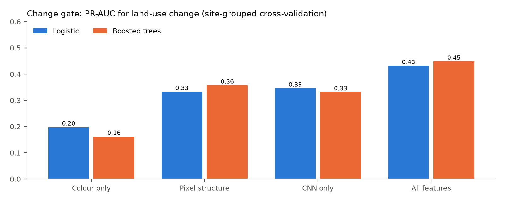
At 90% recall the gate keeps about 62% of pairs, so it can only rank pairs, not label them.

Human-labelled set (n = 495), with 95% Wilson intervals:
| Rule | Changes found | Precision | False-change rate |
|---|---|---|---|
| 32B | 89% (78–95) | 11% (9–15) | 87% (84–90) |
| 235B | 45% (33–58) | 17% (12–24) | 27% (23–32) |
| Both agree | 42% (30–55) | 18% (12–25) | 24% (21–29) |
How often each model said "change", by human label:
| Human label | 32B says change | 235B says change |
|---|---|---|
| Seasonal (n = 214) | 200 (93%) | 67 (31%) |
| No change (n = 226) | 184 (81%) | 53 (23%) |
| Change (n = 55) | 49 (89%) | 25 (45%) |
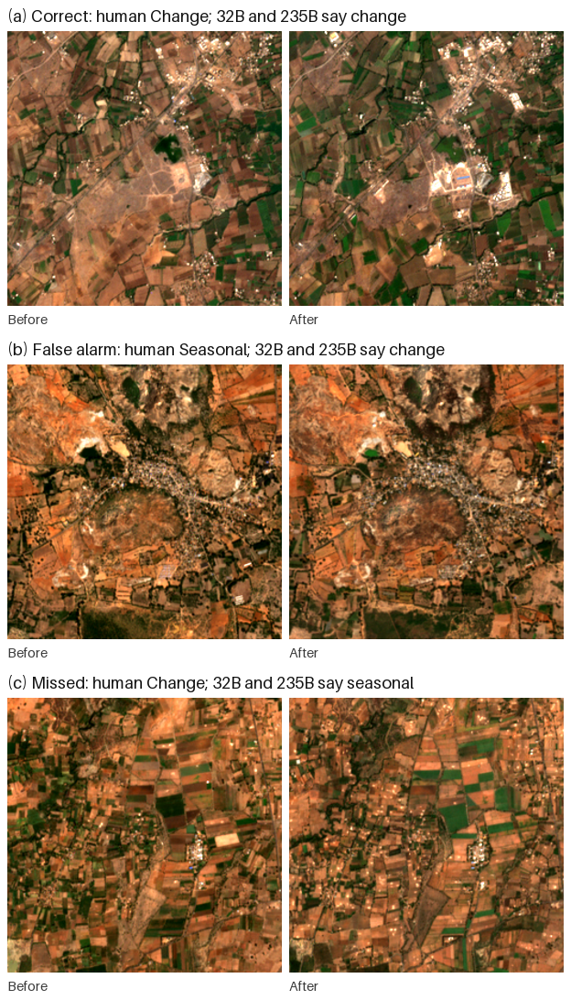
The 235B's conclusions in its own words:
| Resource | Link |
|---|---|
| Code repository | github.com/Sankalp0109/Generative-and-Caption-Based-Vision-Language-Models-for-Remote-Sensing-Change-Detection |
| India Sentinel-2 Change Pairs (15,610 pairs) | kaggle.com/datasets/kspsvlnsiddardha/india-sentinel2-change-pairs |
| Labelled subset (1,002 pairs) | kaggle.com/datasets/kspsvlnsiddardha/india-sentinel2-change-labelled |
| Model run reports (prediction sheets) | kaggle.com/datasets/kspsvlnsiddardha/rsicc-model-run-reports |
| Model checkpoints | kaggle.com/models/kspsvlnsiddardha/rsicc-change-captioning · huggingface.co/Kspsvln/IS · huggingface.co/Kspsvln/IS_phase2 |
Datasets, models and metrics are cited in the References of the Main Report. Contains modified Copernicus Sentinel data (2019–2026).